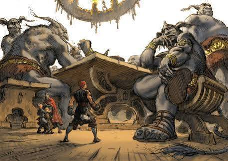
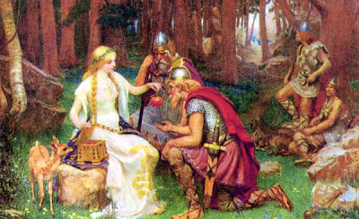

ASGARD
Aventuras de los dioses
En Asgard se encuentra todo lo que los dioses desean tener, tienen grandes bosques con las creaturas de los
9 reinos y un palacio conformado por las estructuras creadas por Odín y los hogares de los dioses Aesir y
Vanir que habitan allí. En cada uno de los edificios del palacio se puede pasar el día disfrutando de rimas,
batallas y grandes banquetes. Debido a que en Asgard se encuentra el Valhala (Palacio de guerreros caídos es
batalla), se encuentra una gran cantidad de almas de los 9 reinos luchando con el apoyo de Odín.
Además de todas las actividades que ofrece Asgard a los dioses, también se pueden pasar aventuras únicas
como las de Thor y Loki con los gigantes de hielo, o disfrutar de maravillas únicas como el hogar de Idunn.
El viaje de Thor, Loki y Thjalfe

El hijo de Odín, Thor dios del trueno y matador de gigantes, con frecuencia viajaba junto con su sirviente
Thjalfe y Loki, dios de las mentiras y los engaños. En varias de sus aventuras los tres compañeros
inspeccionaban las fronteras de Asgard en busca de tesoros y alianzas. Un día Thor junto con sus
acompañantes llegaron al territorio conocido como Utgard, hogar de los más inteligentes y rudos gigantes de
hielo, lo primero que vieron cuando llegaron fue un gran palacio, llamativo por su estructura completamente
de hielo. Los tres compañeros al pasar un gran periodo de tiempo lejos de sus hogares fueron en busca de un
refugio, pasaron por debajo de la fortaleza y se encontraron con el rey de Utgard.
El rey Utgard-Loke les propuso a Thor, Loki y Thjalfe una serie de desafíos para que demostraran sus
habilidades para la población de Utgard, para que de esta manera lograran recibir una atención especial y no
ser expulsados del palacio como vándalos. Thor acepta los retos ya que conoce que el es capaz de superar
cualquier prueba debido a todas las hazañas que ha logrado. Utgard-Loke emocionado empieza las pruebas con
Loki, el rey al ver al dios de los engaños se da cuenta que además de buscar un refugio tiene un deseo de
comer incomparable entonces le dice que lo reta a vencer a uno de los gigantes de hielo en una competencia
de comida, Loki sin pestañar acepta el reto, pero falla debido a que el gigante además de comer los
alimentos servidos, también se alimento de los cubiertos, muebles y recipientes del lugar. Thor enfadado
manda a su sirviente a la segunda prueba, la cual consistía en ganar una carrera, pero Thjalfe no logra
llegar primero que su competidor a la meta. Thor al ver que sus compañeros no lograron pasar las pruebas, él
continua con los retos del rey, pero falla de igual manera, primero pelea con una anciana que lo vence con
facilidad y después en una competencia de beber hidromiel no logra acabar.
Thor decepcionado se va del palacio y antes de alejarse con su carruaje el rey le cuenta el motivo por el
que fallo, en la prueba de velocidad el competidor era el inalcanzable tiempo, el hidromiel era la
representación del océano de Midgard y la anciana que lucho contra él, era realmente la vejes. Thor con
enojo intenta lanzar su martillo a Utgard-Loke, pero el desaparece en el ultimo instante junto con todo el
palacio.

Idunn y su manzano mágico
Idunn es la diosa con el trabajo mas importante en Asgard, su labor es cuidar de un manzano el cual da como
fruto unas manzanas doradas con la capacidad de rejuvenecer a cualquier ser. Estas manzanas están prohibidas
para cualquier habitante de los 9 reinos, excepto los dioses Aeasir y Vanir. Idunn es una diosa con
características que la diferencian a las demás, se caracteriza por su habilidad para cultivar y cosechar sus
manzanas mágicas, pero no pertenece a los dioses Vanir debido a que su habilidad se limita a su plantación,
además Idunn es la única Aeasir que es hija de un enano, el cual es Ivaldi, el mejor herrero de los 9
mundos, hasta que fue superado por sus hijos.
Idunn tenia una importancia tan grande para los Aesir y los Vanir que casi ningún ser la podía ver, aunque
paso grandes aventuras junto a Loki, debido a los tratos malévolos que hacía con los gigantes, estos tratos
además de perjudicar a los dioses de Asgard, también afectaron directamente a los cultivos y a la vida de
Idunn.

© Luis Santiago Solano Pardo - Universidad Nacional de Colombia
Correo lusolanop@unal.edu.co
Gráfica interactiva
Correo lusolanop@unal.edu.co
Gráfica interactiva